WaMü Kollektiv · Ongoing
ALLESANDERSSTADT
A city built from below, where discarded things, insects, art, culture, and nature learn to live together.

What if rubbish became a tool for civic imagination?
ALLESANDERSSTADT transforms discarded Berlin materials and old rooftop skylights into miniature city worlds. The six windows tell a linear transformation story. A grey, burned out city gradually becomes a living ecosystem shaped through art, culture, nature, and cooperation.
Cigarettes appear as exhausted consumers. Insects represent nature returning into the concrete city. A white blossoming plant gives them a universal language. Burned out cigarettes become figures with flower heads who can understand, cooperate, and rebuild the city together.
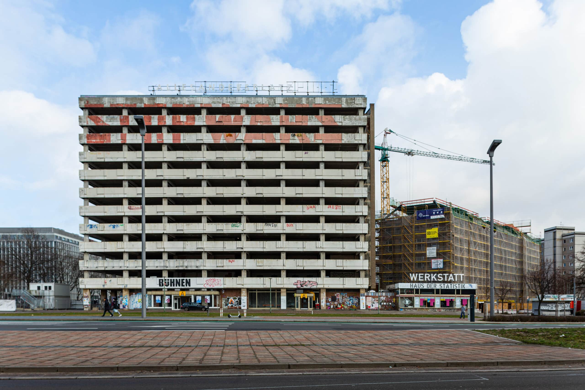
01 Grey Berlin / A100
02 Bundestag Theatre
03 Zentrum Kreuzberg / Kotti
04 Haus der Statistik / STOP WARS
05 Green Berlin
06 Closed Ecosystem
03 · Zentrum Kreuzberg / Kotti
A city behind a window.
At Kotti, a discarded metal window becomes a miniature neighbourhood: rooms glow, small figures make music and play, and an alternative city comes to life from the material that was already there.
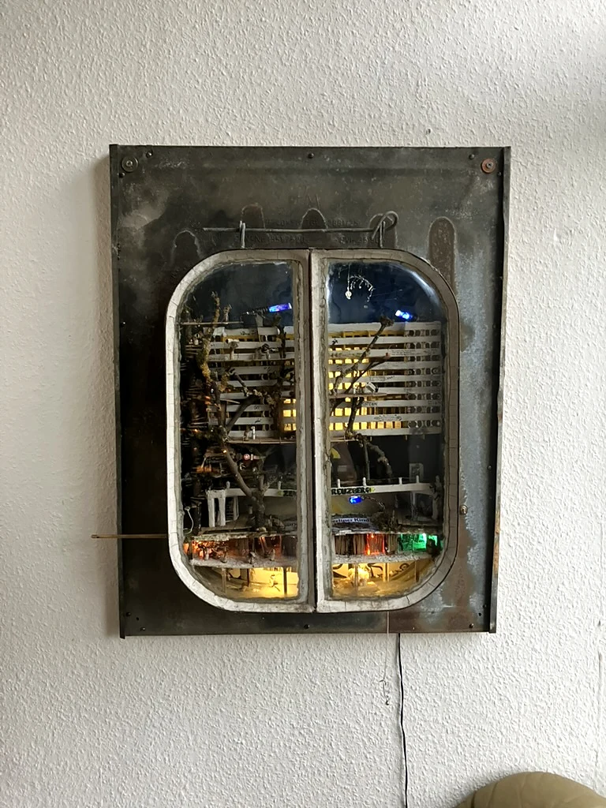
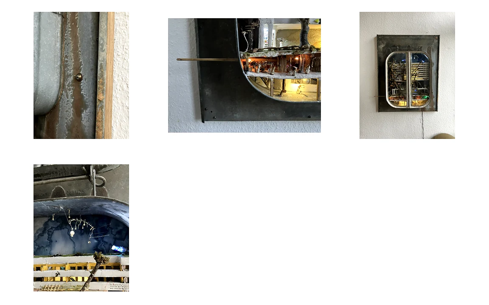
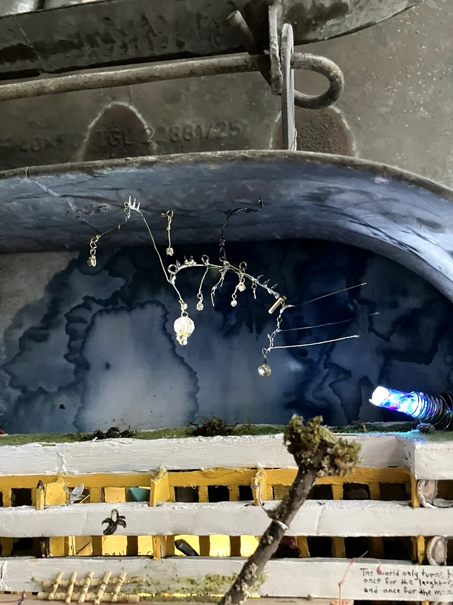
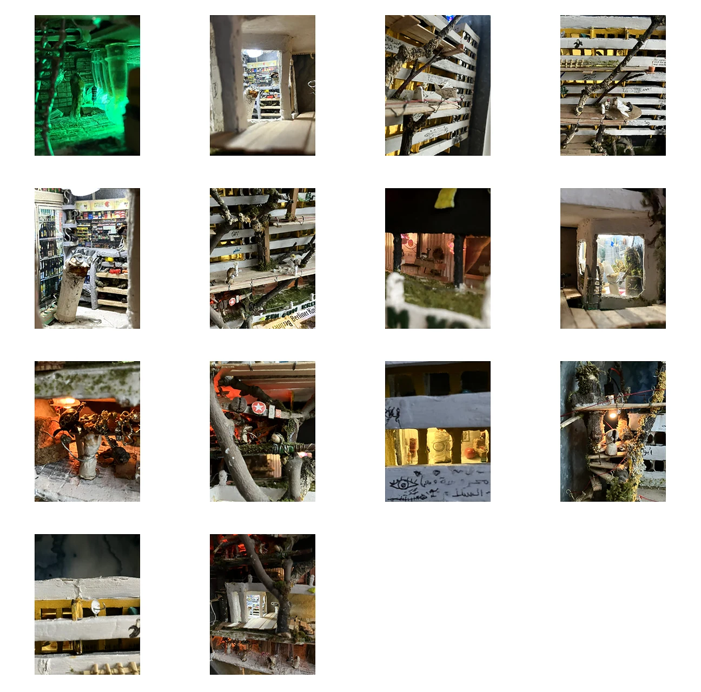
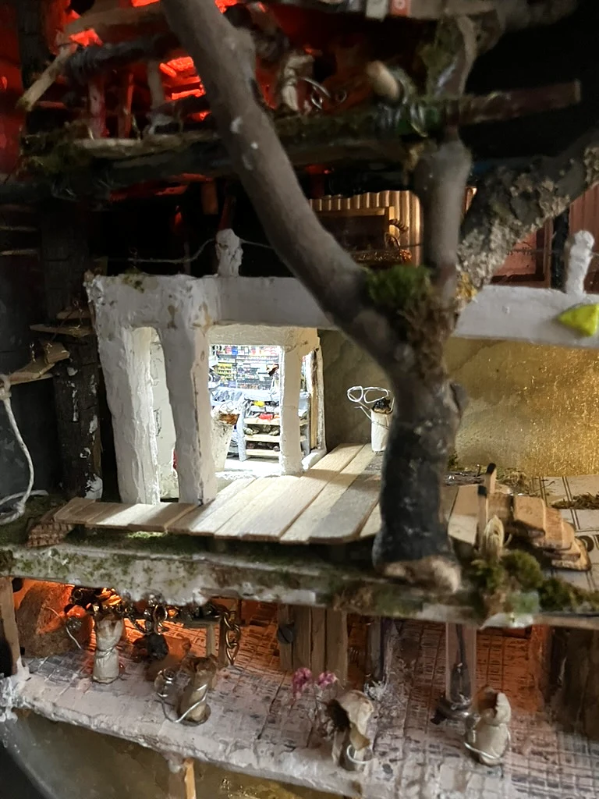
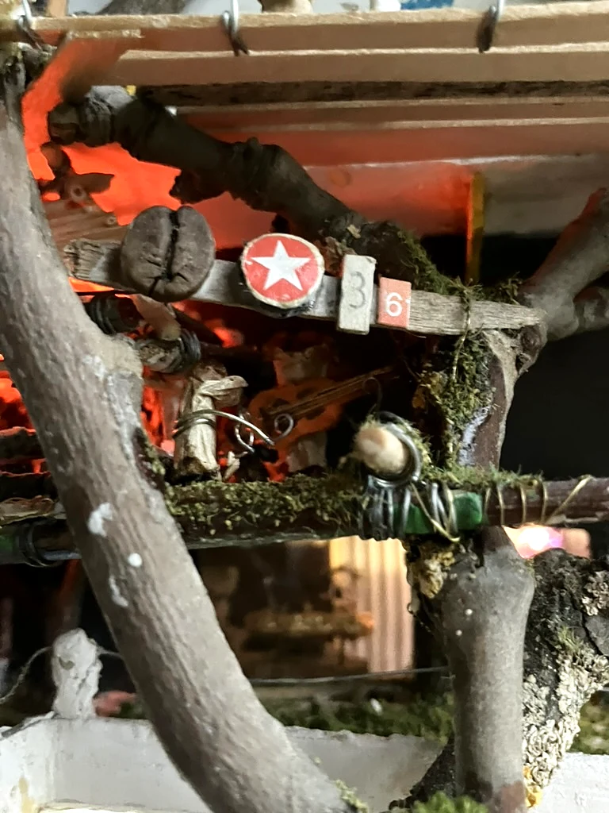
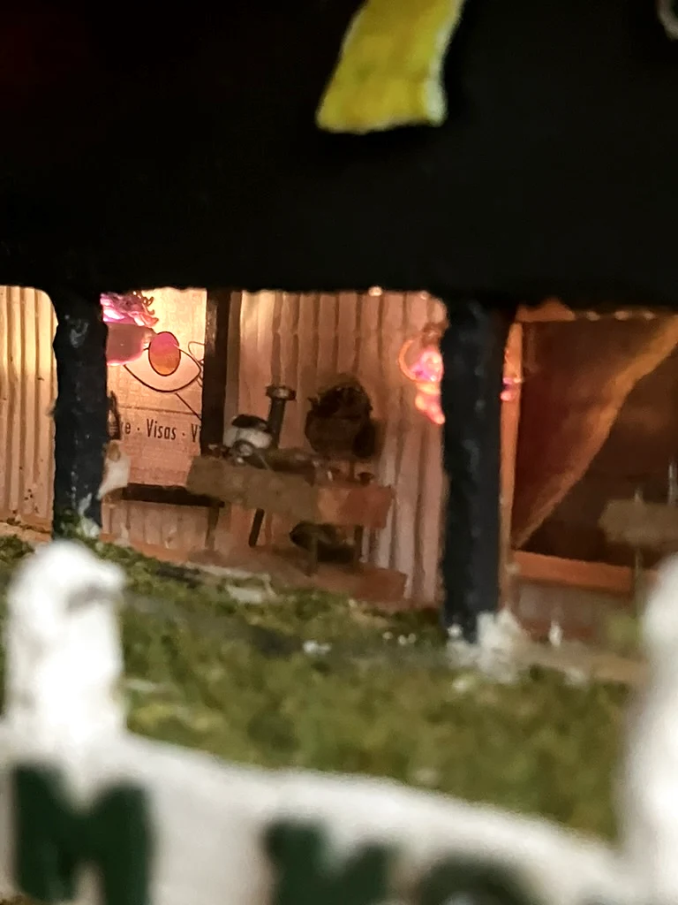
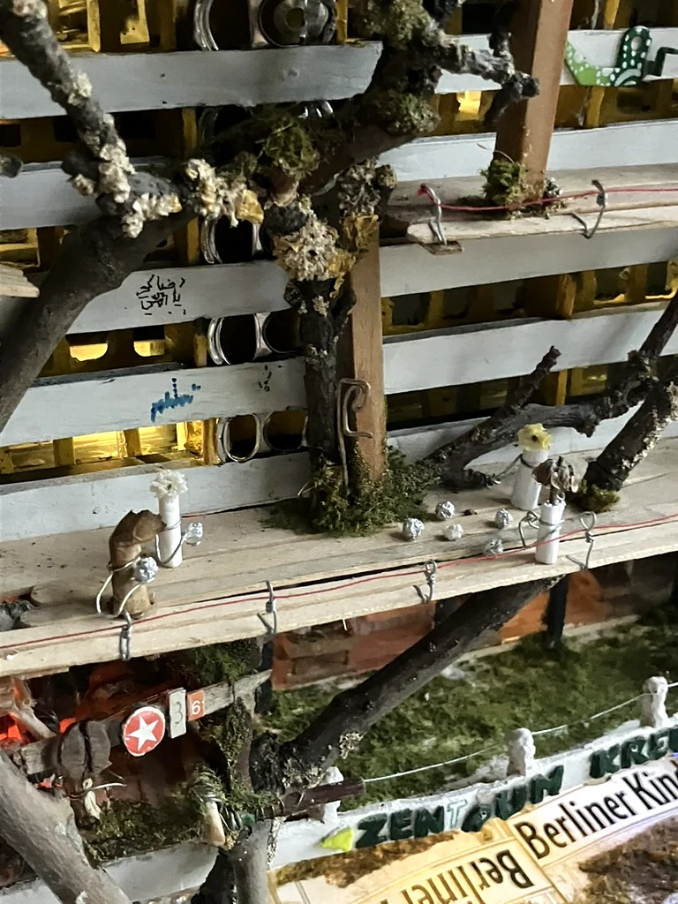
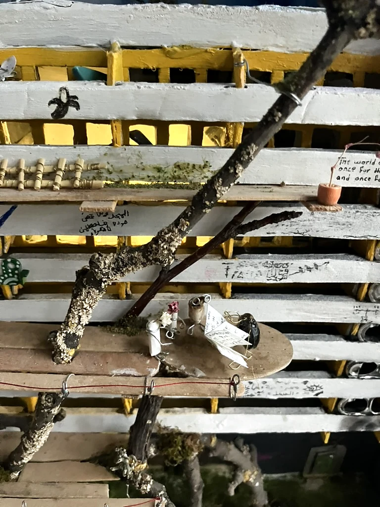
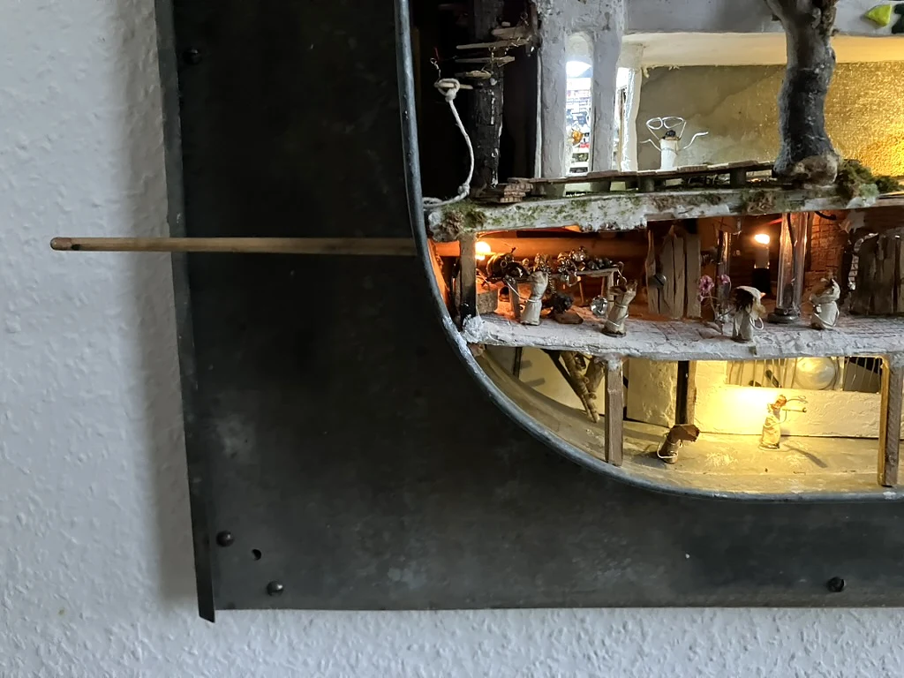
Current development